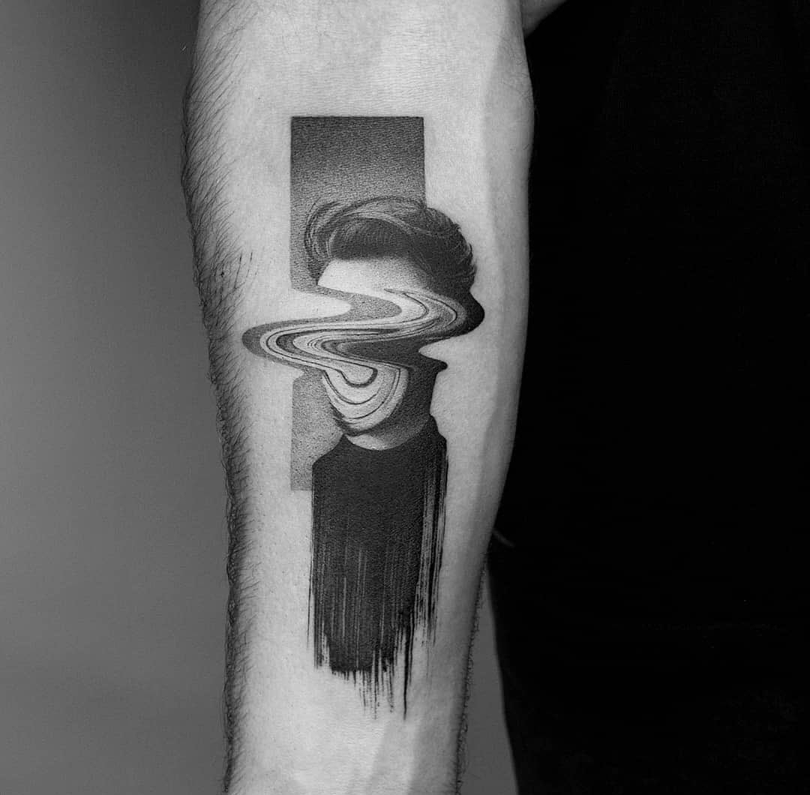
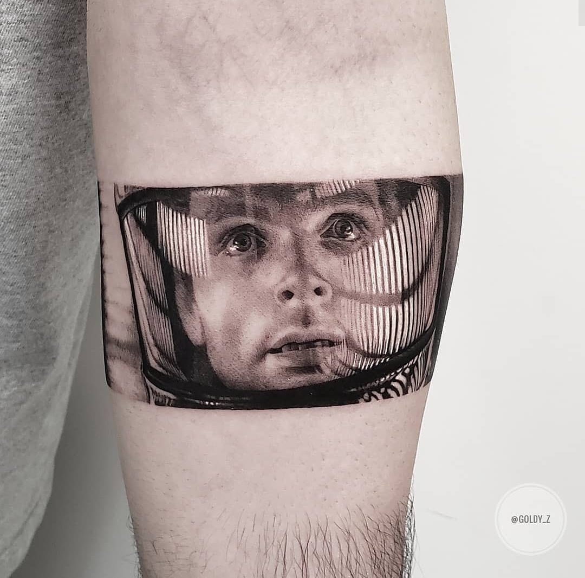
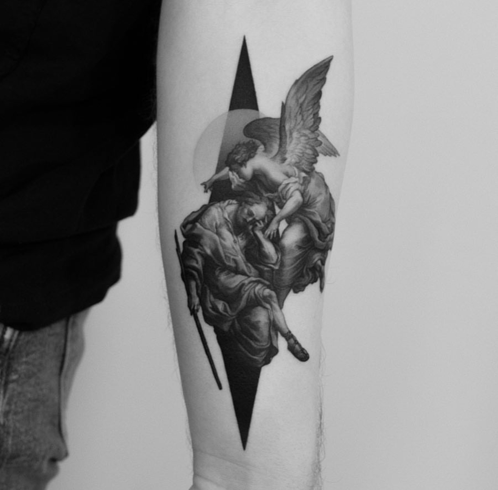
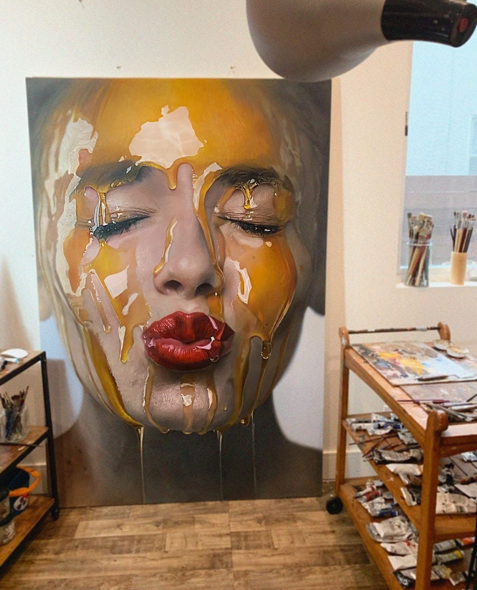
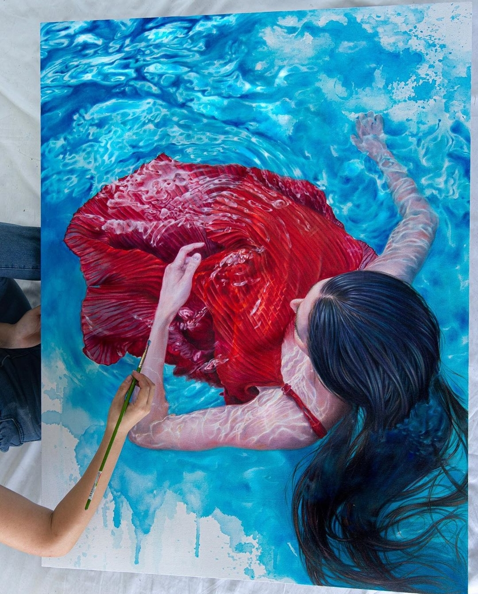
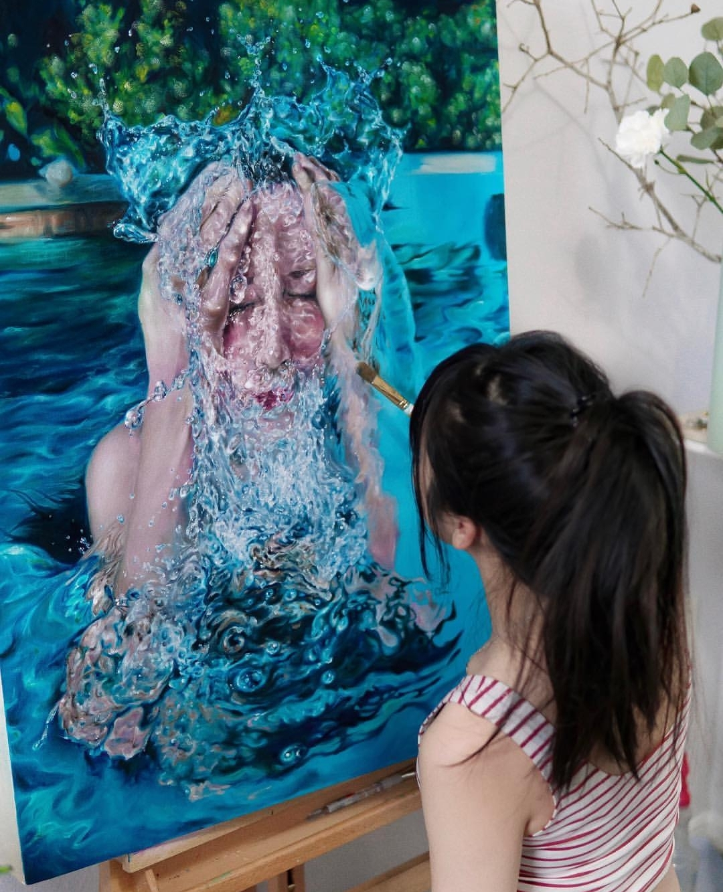
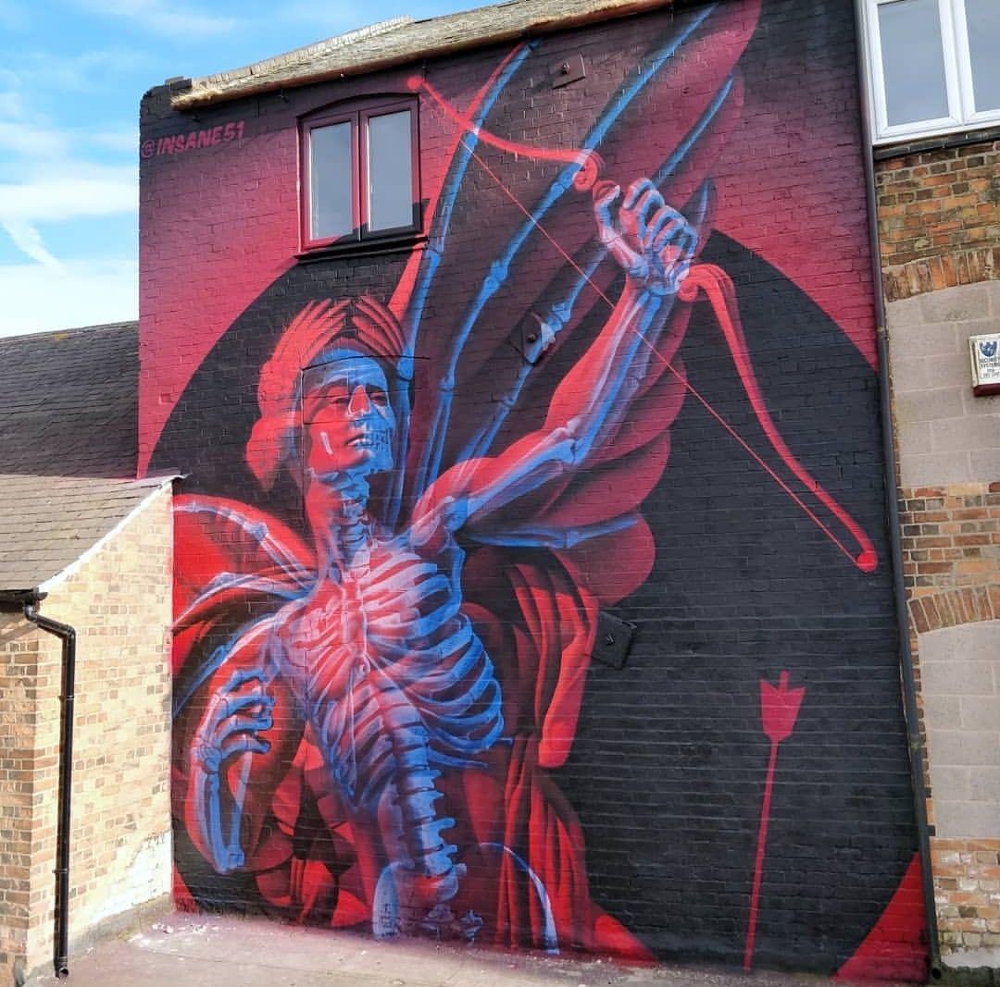
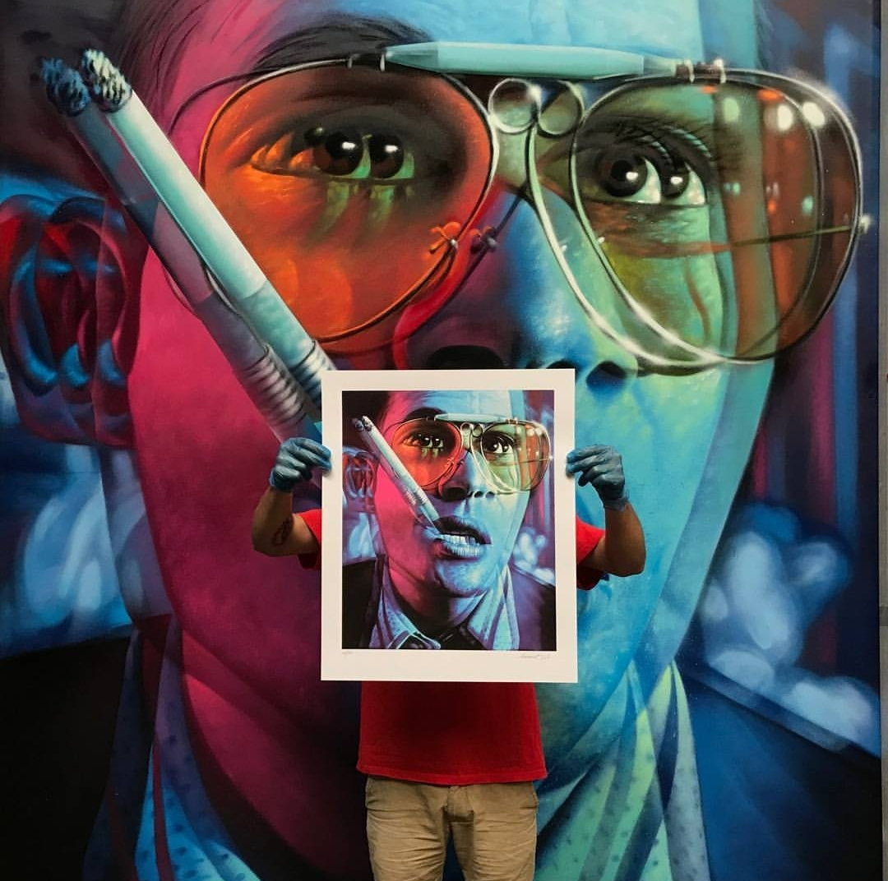
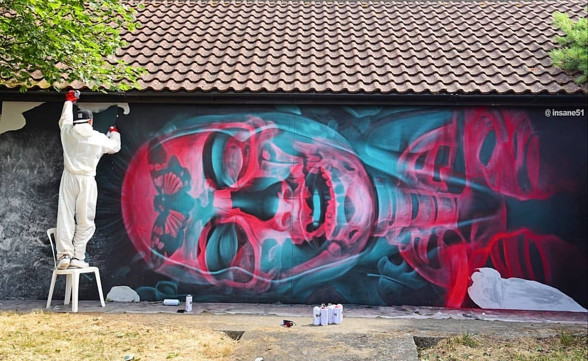

Artist Inventory
Introductory Page > Pablo Picasso > Claude Monet > Edvard Munch > Modern Day Art >
Welcome to the modern day art page



Modern day artists largely mimic the movement of impressionist art. They are utilizing their tools of access to the internet as well as their creativity skills in order to create new forms of old art or, new forms of art all together. Take tattooing for example, art imprinted on one's skin forever. You have the freedom to choose absolutely anything that your imagination can create or, choose a piece of art that already exists and imprint it on your skin forever by a tattoo artist.
At 'BLXCK INK' we can see some truly phenomenal works of art created by the few artists that work there. I will be featuring 3 of my favourite pieces including the works of artists Amanda Piejak, Zlata Kolomoyskaya, annd Pawel Indulski.
These artists, like the historical artists that revolutionized modernist, unique movements of art, have produced incredible work in an extremely unconventional way using skin as a canvas. These are only very few of the endless possibilities that tattoos can cover as, each artist has their own unique style of art and application.
Some view this form of art as grotesque and simply, a form of deformation of one's own body and yet, from an artist's perspective, it is simply a beautiful opportunity to permanently commemorate absolutely whatever they could wish for and to hold it close to them for the rest of eternity.
The social media handle for the tattoo shop that all these artists work at and can be found on Instagram under the handle 'blxckink'
A closer form of art to that of our historical 20th century artists is painting. However, this is still different to 19th and 20th century art work as artists in the 21st century have evolved into creating a new category of 'hyper realistic art'; art so incredibly realistic it can even be difficult to distinguish from a photograph at times.
This form of art is extremely appealing as, even if someone is not an artist, one can truly appreciate the incredibly hard work behind such a piece due to its sheer obvious high quality. Not many can complete work in this form as it takes an incredible amount of practice and dedication but, there certainly are people out there who have mastered the art.
One such artist I would like to feature is Lili Yuan. An artist that has taken to photography, similar to her fellow hyper realistic artists, and creates incredibly realistic paintings from her photographs.
This form of art can more so be seen as conventional and far less risky in comparison to tattoo art however, it is still just as creative and unique and in my opinion, that is enough to belong within the forms of art that have carried out the legacy of 20th century artists that inspired today's artists to do what they love and create for their selves rather than following conventional rules that placed artwork in a rather small box.
Lili's social media account can be found on Instagram under the handle 'oliooolio'
Graffiti is a form of art that has the feel of being very immersive and accepting of artists of all skill levels. It is essentially the biggest supporter of the artist "do what you want" movement, sometimes pushing the boundary too far. For years, artists of extremely varying skill levels have been practicing this form of expressive art with absolutely no restraint. This has certainly caused some issues amongst society however, some truly beautiful and unique artwork emerged amidst the chaos.
A very talented artist I would like to feature simply goes by their social media handle 'insane51', rather than their name, and has done some incredibly intricate, large scale works across the globe.
This form of art has truly knocked down any existing walls of restriction in the art world, literally using the world as its canvas. Almost anywhere you go you can find varying forms of graffiti littering walls. Some may see graffiti as a destructive form of art as some have exploited it in order to deface public and even private properties and historically, crimes have involved the use of graffiti. Some even use it as an outlet for anger and hate however, as with anything else in the world, as much as there is bad, there is good that balances it out. So, even though graffiti has largely been used as a tool in the negative sense of defacing value of others' property, some of it is legal, paid, absolutely stunning art work.
This particular graffitti artist's social media account can be found on Instagram under the handle 'insane51'
Please rate your overall site experience